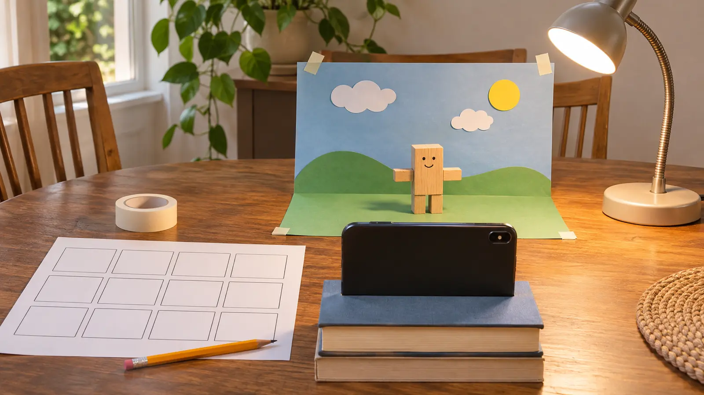

Moves 1–3: enter
The object starts outside the paper stage and moves one finger-width at a time into view. Take two photos after each move.
AT HOME · 30 MINUTES · NO-SPEND · EXPLORATION
Do not build a studio or download five apps. Lock the phone, move one ordinary object twelve small times, take two photos per move, play it back, and keep the first movie off the internet.

Stop motion is a sequence of still pictures in which the object changes a little between images. When the pictures play quickly, the object appears to move. Kids do not need a polished film to learn the trick. They need a phone that stays put, one object, a finish line and an adult who does not take over.
This 30-minute version uses 12 small moves and two photos at each position. Twenty-four photos will look choppy. Good. The point is to understand the process and finish a private first draft, not imitate a studio. PBS LearningMedia’s educator material gives the same core method: steady camera, small changes and repeated photographs.
This works best for ages roughly 7 and up with adult setup. Younger siblings can choose a paper color or watch playback but should not handle small props, the phone stand, lamp or tape unsupervised. Cost is zero when the household already has the device and supplies.
One adult owns the device settings. One child moves the object; another checks the 12-box card or presses the shutter when safe. Swap jobs after move six. If there is one child, the adult is the equipment manager, not the director.
Keep the camera and light fixed. A moving phone creates a jump that looks larger than the object movement. Natural window light can change during a long project, so a short session with one steady lamp is easier. Avoid flashing effects. If the child is sensitive to flicker or bright light, use ordinary room light and accept a darker movie.
The learning job is sequencing still images, not choosing software. Use a built-in camera and manual playback. If the household already has a stop-motion app, the adult checks its current developer, permissions, account requirement, cloud sync, advertising, export behavior and child privacy before use. Do not create a child account, enable location, grant contacts or upload a clip to make a 30-minute activity work.
If editing becomes the main interest, schedule a separate adult-reviewed session. Do not add copyrighted music, another person’s photograph or a commercial character and call the result original. The no-posting oral-history plan uses the same keep-it-local boundary.
Camera keeps moving: switch to a paper flip-book using the Library of Congress family activity; no phone required. Child wants perfection: play the rough 24-photo version and end with one note for next time. Siblings argue: one moves for six positions, one captures for six, then swap. No playback tool: swipe through photos. Low energy: use six positions and one photo per move. Power outage or device unavailable: draw four panels instead.
Skip when device use is already the day’s conflict, a safe stable camera position is not available, the child cannot tolerate a rough first result, privacy cannot be controlled, or a younger sibling cannot be separated from small props and equipment. Use the paper-airplane lab for a movement activity away from screens, or the three-object mini museum for quiet storytelling.
Reviewed November 7, 2026 using PBS LearningMedia’s stop-motion educator instructions for steady camera, small movements and repeated photos, plus the Library of Congress family blog’s low-tech flip-book alternative. The 12-move card, 30-minute schedule and no-posting rule are Mr Adventure Dad’s original family framework. No affiliate links are attached.
MAKE THE WEEK COUNT
Build the plan your family can finish well, then leave enough energy for the next part of the day.
More family plans